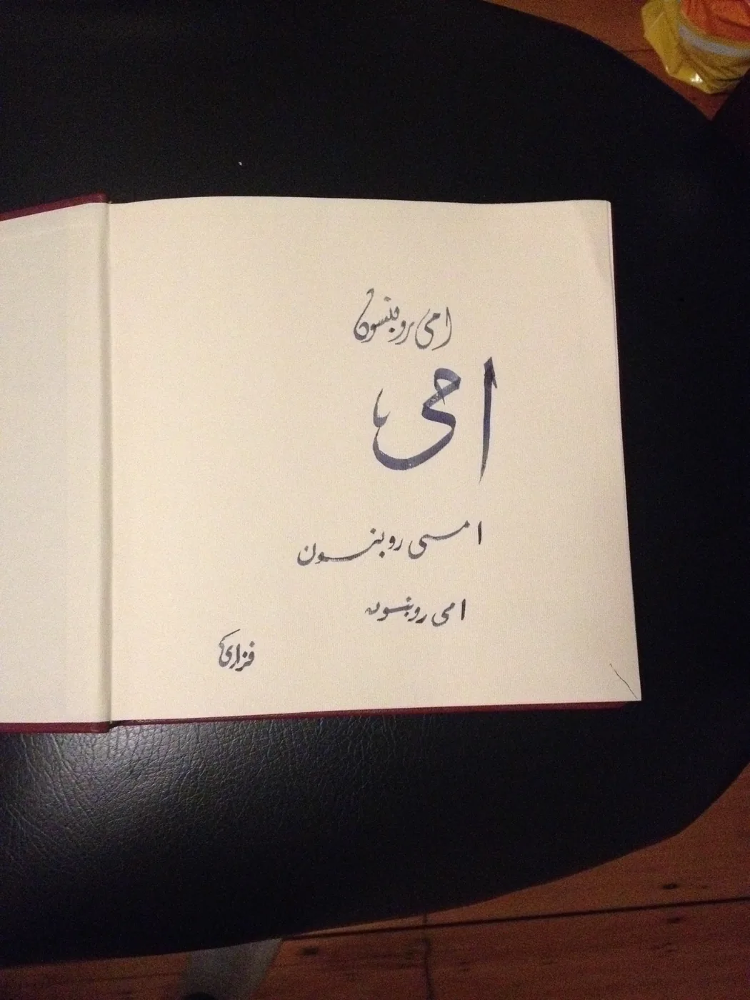
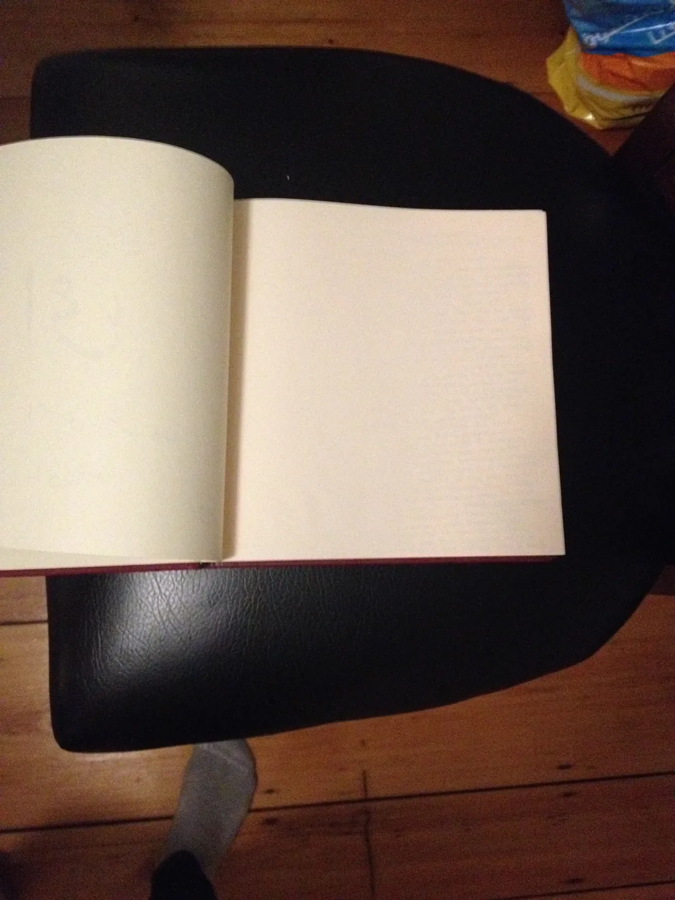

Blog · May 5, 2014
Thoughts in Egypt
Hope and optimism. Notes I wrote recently in Alexandria.
Low on time, pardon my not typing them all up. It starts with an adventure to a citadel and evolves into a story of a day’s conversations and realizations.
Something thoughtful about seeing real pen on paper.

writing “Amy Robinson” in Arabic by a friend

a moment of thought
First published on my old blog, amyrobinson.wordpress.com, May 5, 2014.